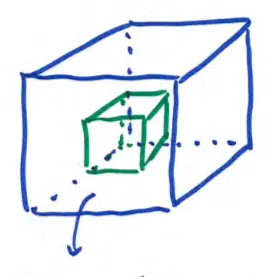

17.8 The Divergence Theorem (part 2)
\[ \iint_{S} \vec{F} \cdot d\vec{S} = \iiint_{D} \text{div} \vec{F} \, dV \]
\( D \): space enclosed by \( S \)
assumed \( \vec{n} \) pointing outward
if \( \vec{n} \) is inward, then flip sign
\[ -\iiint_{D} \text{div} \vec{F} \, dV \]
this is useful if the enclosed space has another hollow space

\( D \): space/volume between cubes
remove a smaller cube from inside the big cube
\( S \): surface bounding \( D \) is the six outer faces and the six inner faces (that bound the small cube)
- \( S_1 \): the outside surface (blue cube)
- \( S_2 \): the inside surface (green)